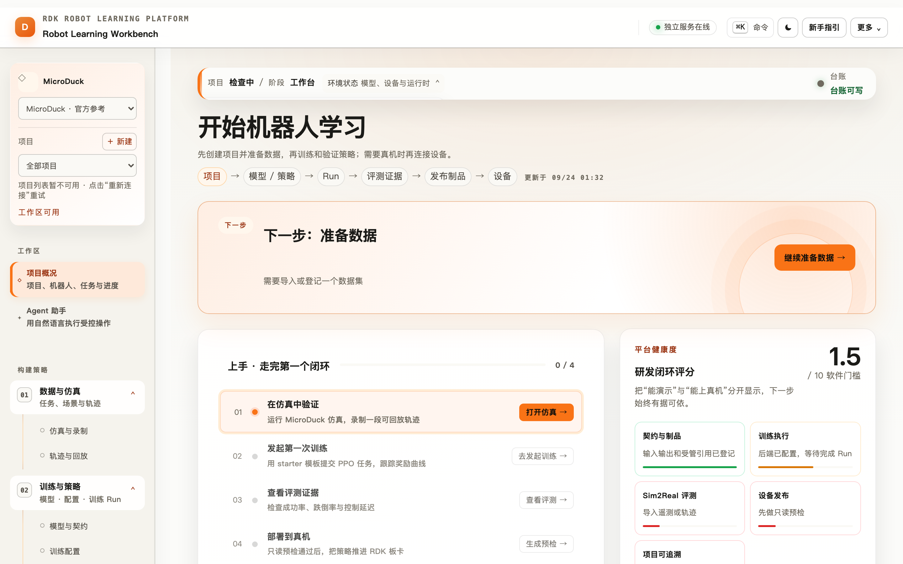
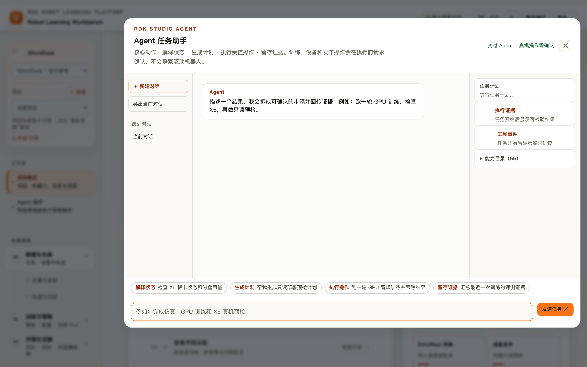
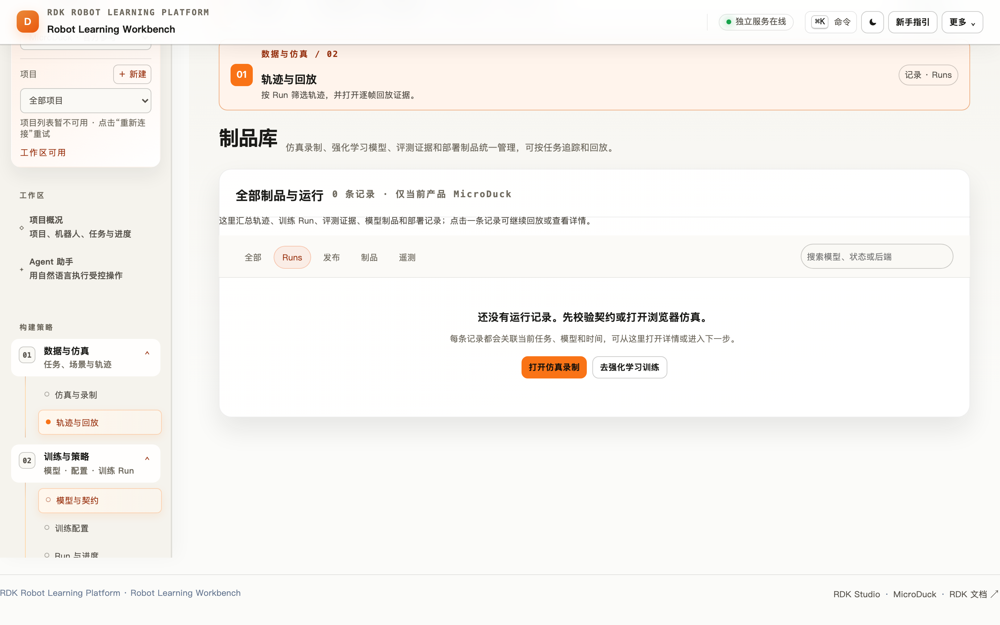
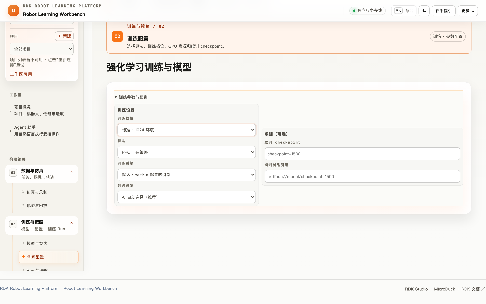
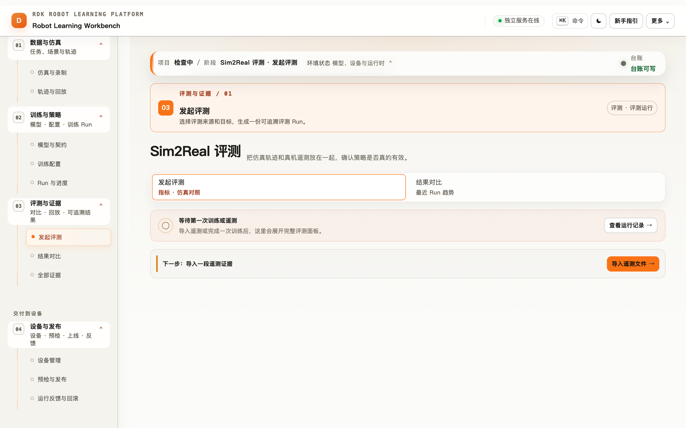
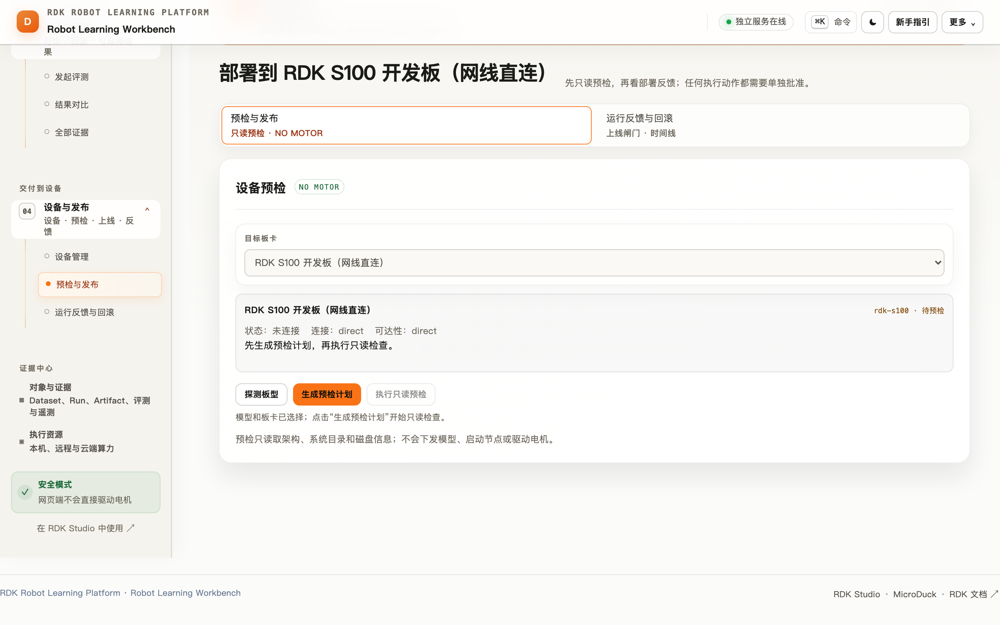
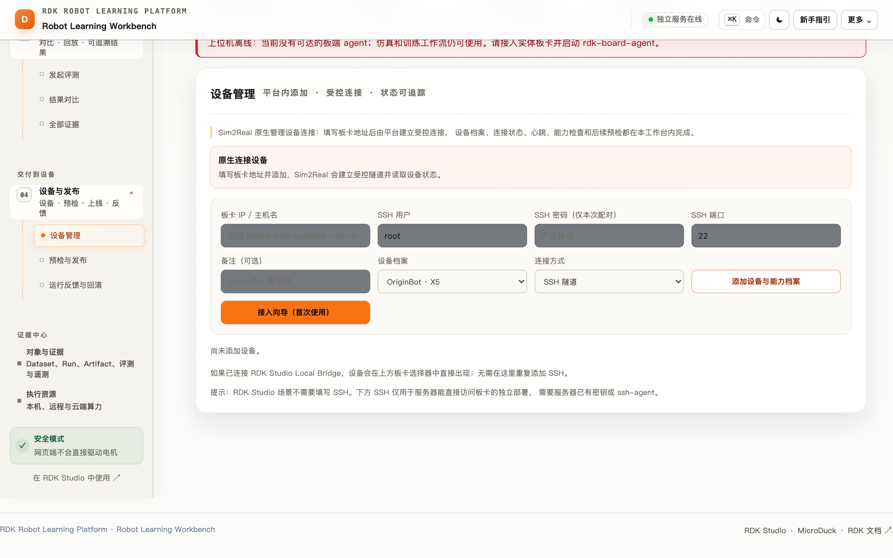
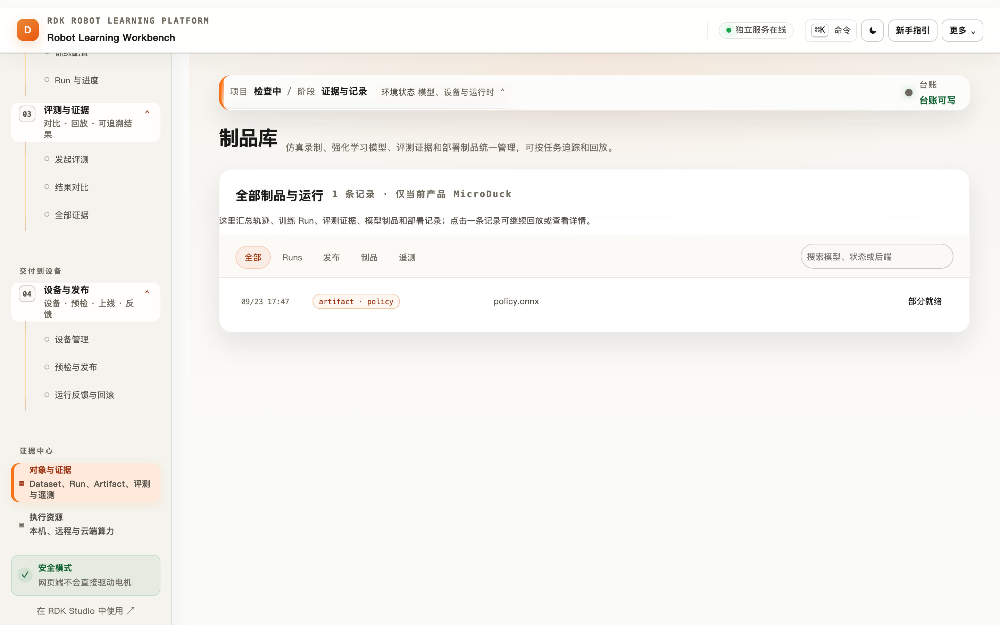

RDK Robot Learning Platform 全功能产品手册与最佳实践
面向开发者、算法工程师、机器人工程师、评估人员和项目评审者的完整使用手册。
本手册以仓库当前代码和可见界面为准，覆盖浏览器工作台、训练执行、评测证据、X5 设备、Agent、MCP 和运维边界。

图 1：工作台首页把“仿真 → 训练 → 评测 → 部署”串成一条可追溯工作流。截图来自当前运行界面。
1. 先理解产品
RDK Robot Learning Platform 是一个面向 RDK X5 / S600 / S100 与 MicroDuck、OriginBot、RDK Duck 产品线的机器人学习控制面。它把策略开发拆成可观察、可复现、可审计的阶段：
平台的职责边界很清楚：浏览器负责交互、仿真、录制和回放；服务端负责身份、契约、幂等、配额和证据台账；训练 Worker 或 GPU Runner 执行训练；BoardAgent 负责设备探测、预检、遥测和经过批准的受限执行。网页不会直接连接电机，也不会把 Mock 结果冒充真实训练。
1.1 三个产品承诺
| 承诺 | 具体行为 | 验证方法 |
|---|---|---|
| 学得起来 | 浏览器仿真、轨迹录制、Local / Mock / GPU 训练 | 运行 npm run demo:sim2real 或 npm run demo:starter |
| 信得过 | Run、Artifact、Evaluation、Deployment 形成 lineage，指标缺失保持为空 | 在“对象与证据”查看原始 JSON 与来源 |
| 上得去 | 契约检查、板型预检、Canary、人工批准、急停和看门狗 | npm run demo:preflight -- --strict 与现场清单 |
1.2 能力状态的正确读法
- Mock / 合成证据：验证协议、台账、页面和回放，不产生可部署模型。
- CPU 真实训练：starter-ppo、离线 BC、ACT、Diffusion Policy 等可在本地验证；是否能上板仍需目标板制品、遥测和预检。
- GPU 训练：通过本机 Agent、远程 SSH Agent 或平台 Runner 接入；网页只持有连接信息和状态，不保存用户 SSH 密码。
- 真机能力：X5 BoardAgent、真实遥测、BPU/ONNX 制品和受限运动需要部署方设备与现场验收。
2. 安装、启动和健康检查
2.1 本地开发与演示
nvm install && nvm use
npm ci
npm run setup
npm run dev:sim2real
打开 http://127.0.0.1:18102。想要隔离的演示数据，使用：
npm run demo:sim2real
# 浏览器打开启动器打印的 http://127.0.0.1:18102/?demo=1
?demo=1 固定 MicroDuck 和行走任务，并预置一台 x5-demo 参考设备。退出启动器后临时台账会清理，不污染日常开发记录。
2.2 运行前检查
npm run doctor
curl -s http://127.0.0.1:18102/healthz
curl -s http://127.0.0.1:18102/readyz
npm run demo:preflight
healthz 关注进程、台账和依赖是否可读写；readyz 关注模型资源、认证和设备 adapter 是否达到当前部署要求。演示阶段允许 reference agent 降级；正式演示或发布使用 --strict，Mock 会以非零状态阻断。
2.3 线上环境
线上站点使用 RDK Studio SSO。登录后确认顶栏账号、工作区和服务连接均为就绪；如果页面提示“需要登录”，使用 SSO 卡片重新登录，再回到 /sim2real/。服务端应由 systemd 管理，台账目录使用绝对路径，反向代理只发布工作台和健康探针。
3. 工作台信息架构

图 2：Agent 面板把自然语言请求拆成计划、工具事件和执行证据。训练、设备和发布动作在执行前会请求确认。
左侧导航按用户意图分成四组，共 8 个视图：
| 分组 | 视图 | 主要功能 | 核心产出 |
|---|---|---|---|
| 工作区 | 项目概况 | 项目上下文、闭环进度、服务状态、下一步 | 当前工作流状态 |
| 工作区 | Agent 助手 | 解释状态、生成计划、执行受控工具、留证 | 计划与执行证据 |
| 构建策略 | 数据与仿真 | MicroDuck / OriginBot 仿真、动作任务、录制 | JSON / JSONL 轨迹 |
| 构建策略 | 训练与策略 | Manifest、契约、引擎、超参、Run | Checkpoint / ONNX / Run |
| 交付到设备 | 评测与证据 | 遥测导入、回放、指标、仿真/真机对比 | Evaluation |
| 交付到设备 | 设备与发布 | 设备发现、预检、签发、Canary、Live | Deployment / Preflight |
| 证据中心 | 对象与证据 | Runs、制品、发布、遥测筛选与详情 | 可追溯台账 |
| 证据中心 | 执行资源 | 本机 Agent、远程 GPU、云端 Runner | 资源状态与配额 |
顶栏和状态条显示产品线、项目、模型、任务、目标设备、训练后端和台账健康。页面之间共享这些上下文，减少“在错误产品线或错误板型上操作”的风险。
4. 三条产品线与契约
工作台支持三种产品选择，选择器位于侧栏项目卡：
| 产品线 | 浏览器仿真 | 参考契约 | 适合场景 |
|---|---|---|---|
| MicroDuck | MuJoCo/WASM 场景（需挂载审核过的 bundle） | 61D 观测 → 14D 动作，50Hz | 腿式任务、足球、站立/行走/恢复 |
| OriginBot | 本地适配器与隔离 MuJoCo 场景 | 8D 观测 → 2D 差速动作 | 目标导航、X5 传感器和底盘现场演示 |
| RDK Duck | 需要真实 manifest 或部署方适配器 | 由 manifest 声明 | RDK 自有产品线接入与后续真机验收 |
契约（manifest）至少包含：产品标识、观测顺序和形状、动作顺序和范围、控制频率、运行时分工、目标板型、制品引用和摘要。登记时只保存元数据与校验和，不执行上传的 Python、XML 或 shell。
契约最佳实践
- 修改观测或动作顺序时创建新版本，不覆盖历史版本。
- 模型名包含任务、环境数、迭代数和日期，例如
originbot-goalnav-256env-ep500-v3。 - 把控制模型（CPU ONNX、单线程）与视觉模型（X5 BPU）分开声明。
- 目标板型、采样率和动作范围写进 manifest，不依赖口头约定。
- 普通 ONNX 只代表仿真或本地路径；声称可部署必须附带目标板编译制品、runtime 元数据和板端延迟收据。
5. 数据与仿真：从动作到轨迹

图 3：轨迹按 Run 筛选，支持逐帧回放，后续评测引用同一份证据。
5.1 仿真操作
- 进入“数据与仿真 → 仿真与录制”。
- 选择产品线和动作任务，确认状态条里的模型、任务和频率。
- 打开已挂载的仿真场景，先做短动作验证。
- 点击开始录制，完成单一目标动作后停止并保存。
- 在“轨迹与回放”检查时间戳、观测长度、动作范围和 episode 边界。
浏览器仿真需要 WebGL。画布黑屏时先开启硬件加速或切换 Chrome / Edge；数据链路可以先用回放页验证，不要把黑屏误判成训练服务故障。
5.2 数据质量门
- 轨迹必须有单调时间戳、完整观测和动作、明确 episode 边界。
- 采样频率应与 manifest 一致（MicroDuck 默认 50Hz）。
- 动作不能超出契约范围；离群帧和跌倒事件要留在数据中，不能悄悄删除。
- 训练集、验证集按 episode 划分，避免同一段连续轨迹泄漏到两侧。
- 真实遥测在绑定 Run 前先本地解析和回放，确认
source、时间、板型和mock=false。
6. 训练与执行资源

图 4：训练配置页把模型契约、后端、档位和续训 checkpoint 放在同一张表单中。
6.1 训练后端
| 后端 | 何时使用 | 结论边界 |
|---|---|---|
| Mock worker | 首次验收、无 Python / CUDA | 只验证协议和台账，不生成可部署权重 |
| Local worker | CPU 真实训练、开发调参 | 由当前引擎的验证脚本证明，仍需板端验收 |
| 本机 GPU Agent | 用户自己的 GPU | 浏览器通过 127.0.0.1 连接，核心服务不接触本机 GPU |
| 远程 SSH Agent | 独立 GPU 服务器 | SSH 密钥由用户电脑 Agent 使用，不保存 SSH 密码 |
| RoboGo / 平台 Runner | 云端或团队算力 | Token 只在服务端短时使用，状态通过 reconcile 回写 |
6.2 引擎选择
| 引擎 | 范式 | 典型入口 | 关键验证 |
|---|---|---|---|
| starter-ppo / SAC | 在线强化学习 | npm run demo:starter |
真训练、ONNX 导出、遥测评测 |
| MJX / dm_control | MuJoCo 接触动力学 | verify:mjx-adapter / verify:dm-control-adapter |
物理与生态 API |
| visual-ppo | 像素观测 RL | verify:vision-observation |
JAX 与 ONNX 数值等价 |
| offline-bc | 离线行为克隆 | npm run train:offline-bc |
train/val、ONNX 等价 |
| ACT | Transformer + CVAE 动作分块 | npm run train:act |
episode 划分、时序集成、ONNX |
| Diffusion Policy | DDPM 动作分块 | npm run train:diffusion-policy |
去噪循环 ONNX 化 |
| SmolVLA | VLA 参考适配 | verify:smolvla |
CPU dry-run；完整微调需 CUDA |
| MicroDuck 任务族 | 腿式、足球、循环策略 | 对应 verify:microduck-* |
61D→14D 契约与安全运行时 |
6.3 训练提交与续训
- 选择已登记模型和目标资源。
- 先选择
smoke档，确认契约、队列和台账都正常。 - 再选择
low-vram、standard或high-vram，只改变一个关键变量。 - 需要调参时指定明确的
resumeFrom.checkpointId，不要凭名称猜 checkpoint。 - 观察
queued → running → completed/failed；网络断开时先执行 reconcile，不要立即重复提交。
训练 Run 的 mock、deployable、metrics 和 artifact 引用必须与真实执行一致。 completed 只表示 worker 完成，不自动代表质量门通过。
6.4 GPU 资源最佳实践
- 单 GPU 主机初始并发设为 1，确认显存和数据吞吐后再提高。
- 远程 Runner 固定 Node/Python/CUDA/驱动版本，资源卡记录镜像或环境指纹。
- Token 不放 URL、浏览器 localStorage 或日志；使用短期 token 和最小权限。
- 资源离线时停止提交新 Run，保留已有 Run 的状态，恢复后用 reconcile 补齐。
- 训练文件和 checkpoint 放对象存储或独立目录，不把大文件塞进 JSON ledger。
7. Sim2Real 评测与证据中心

图 5：评测页同时展示契约状态、遥测来源、回放时间线和仿真/真机对比。
7.1 评测流程
- 在“评测与证据 → 发起评测”选择 Run 和模型制品。
- 导入 X5 BoardAgent 或浏览器录制的 JSONL；文件在浏览器先本地解析，不会因为选择文件就自动上传。
- 检查采样率、观测/动作维度、奖励曲线、跌倒事件和资源占用。
- 点击“上传到当前 Run 并评测”，服务端分块写入并生成 Evaluation。
- 查看
actionMAE、成功率、跌倒率、控制延迟和置信界；缺失数据保持—。
7.2 证据分级
demo-fixture / mock 只能演示页面和流程；source=uploaded 表示用户上传但尚未验证；训练 worker 指标和 attested replay 才能作为真实评测依据。合成证据永远不能解锁发布闸门。
7.3 评测最佳实践
- 仿真和真机使用同一任务 ID、动作定义和成功判据。
- 报告记录模型摘要、manifest 版本、固件、板型、采样时间和环境变量。
- 对外报告只引用真实 worker 或 attested replay；不要用默认值填充空指标。
- 评测失败先检查数据质量和契约，不要先改质量门阈值。
- 使用对象与证据页保存原始 JSON，图表只是摘要，不能替代原始证据。
8. 制品、发布与 X5 预检

图 6：部署页把板型、制品、评测和预检结果放在发布闸门前。
8.1 四道闸门
- 契约通过：观测、动作、频率、运行时和板型一致。
- 评测与预检通过：真实指标、目标设备、工具链、磁盘和 runtime 均满足要求。
- 无电机 Canary：安装和加载路径正确，先观察日志和推理时序。
- 人工批准 Live：现场有人、急停可用、回滚版本已准备。
8.2 只读预检
预检读取板卡 passport、架构、系统目录、磁盘、策略目录、runtime 和设备能力；不上传模型、不启动节点、不驱动电机。预检失败必须修复失败项后重跑，不绕过或手工改台账。
典型真机准备：
RDK_X5_SSH_TARGET="root@<board-host>" ./scripts/install-x5-board-agent.sh
RDK_X5_SSH_TARGET="root@<board-host>" ./scripts/deploy-x5-board-agent.sh
npm run demo:preflight -- --strict
8.3 安全红线
- 平台驱动开关、板端驱动开关、策略运行开关默认全部关闭。
- 速度和角速度双重钳制；底盘命令 500ms 无刷新自动归零。
- 空格键急停和板端急停必须在所有视图可用。
- 运动金丝雀使用时间盒，单次命令短、低速、可回退。
- 任何急停、看门狗、传感器陈旧或维度不匹配都 fail-closed。
9. 设备上位机、遥测和策略运行时

图 7：上位机视图展示板卡心跳、电源、IMU、里程计、相机和受限运行时状态。
设备上位机通过服务端认证代理读取 BoardAgent，浏览器不直连板端。常见只读能力包括：CPU/内存/磁盘、网络速率、运行时长、ROS/TROS 话题、MJPEG 相机和串流日志。
策略运行时路径是“训练 → 导出 → 上传 policies/ → 维度校验 → 加载 ONNX → 观测槽位检查 → 人工确认 → 受限启动 → 推理统计 → 停止”。观测槽位要标明真实传感器、适配数据和零填充；部分真实输入不能描述成完整 sim2real 对齐。
10. Agent 助手与 MCP
10.1 内置 Agent
Agent 能解释当前状态、生成训练/评测/预检计划、调用受控工具、显示执行证据。执行方式包括完整、最快和只读；训练、设备、发布相关动作会在执行前等待确认。适合用自然语言询问“为什么这次不能上板”，不适合绕过页面闸门。
10.2 外部 Agent（MCP）
# 终端 1
npm run dev:sim2real
# 终端 2
npm run dev:mcp
MCP 通过 stdio 暴露仿真、训练、评测、制品、设备和部署工具；幂等、配额、权限、审批和运动安全仍由 /api/v1/duck 服务端执行。客户端配置、认证边界和工具目录见 MCP 适配层。
主链路读取建议优先使用 rdk_golden_path：它按项目、模型和任务过滤，返回从数据/任务、训练 Run、制品、评测到 RDK 反馈的当前进度，适合作为外部 Agent 的第一步盘点工具。它是只读能力，不会创建 Run、修改台账或触发设备动作。
外部 Agent 最佳实践：先调用读取工具获取上下文，再生成计划，最后一次性提交经过确认的写操作；保存返回的 Run ID 和幂等键；遇到超时查询状态，不重复创建任务。
11. 对象、证据和审计

图 8：证据中心把 Dataset、Run、Artifact、Evaluation、Deployment 和 Telemetry 放在同一条查询路径。
推荐的血缘关系：
Dataset → Training Run → Artifact → Evaluation → Deployment
└────────────── Telemetry / Replay ──────────────┘
每次发布至少能回答：用了哪份数据、哪个 manifest、哪次 Run、什么摘要、在哪块板、谁批准、预检为何通过、如何回滚。失败记录和 outcome unknown 必须保留，不能用删除来“清理”历史。
12. 运维、容量和故障排查
12.1 单实例边界
默认 JSON ledger 适合本机、单写实例和演示。启动第二个服务实例必须设置独立 RDK_SIM2REAL_STORAGE_DIR；生产多副本需要 PostgreSQL、对象存储、分布式锁和独立配额服务，不能只安装数据库就宣称完成迁移。
12.2 故障排查顺序
- 看顶栏连接状态，刷新一次。
- 请求
/healthz和/readyz，确认进程、台账、认证和 agent。 - 打开对应 Run / Deployment 详情，读失败原因和原始 JSON。
- 检查 manifest、artifact 摘要、板型 passport、agent 心跳和时间戳。
- 外部训练超时先 reconcile；确认没有活动任务后再重试。
- 修复后只重跑当前阶段，并确认新记录引用旧记录而非覆盖。
12.3 发布前检查
npm run format:check
npm run verify:ui
npm run verify:api-contract
npm run smoke:sim2real-local
npm test
发布前再运行完整 npm run verify，并附上真实板端、遥测和回滚证据。命令退出码和实际输出比“启动过”更重要。
13. 一次完整交付的验收清单
- [ ] 项目、产品线、任务、模型和目标设备上下文正确。
- [ ] Manifest 校验通过并登记版本。
- [ ] 仿真轨迹可回放，频率、维度和 episode 边界正确。
- [ ] 训练 Run 标明真实 / Mock、后端、指标和制品引用。
- [ ] 评测遥测绑定到具体 Run，来源和
mock状态可追溯。 - [ ] Artifact 摘要、目标板型和 runtime 元数据一致。
- [ ] X5 只读预检通过，失败项有修复记录。
- [ ] 无电机 Canary 日志干净，watchdog 和急停实测可用。
- [ ] Live 有人工批准、时间盒、现场人员和回滚版本。
- [ ] 运行后遥测回流到 Run，记录页能够复原全过程。